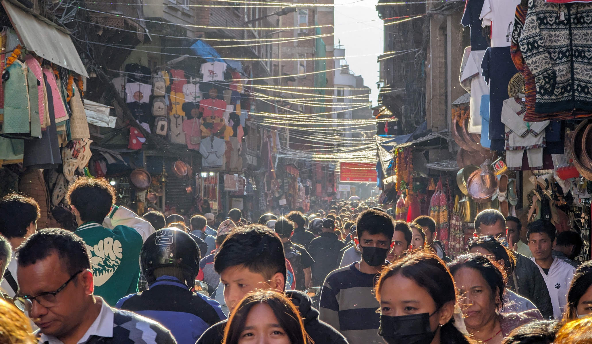
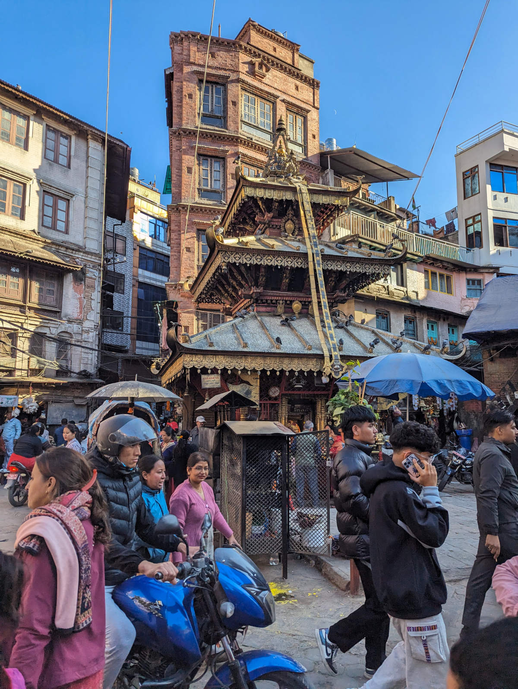
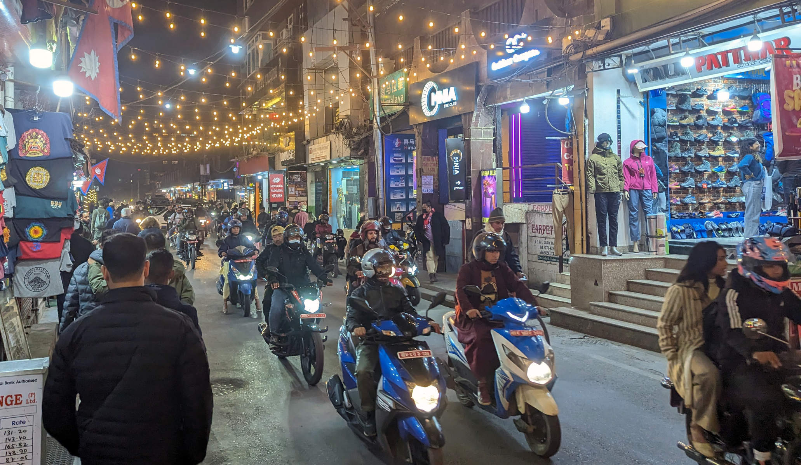
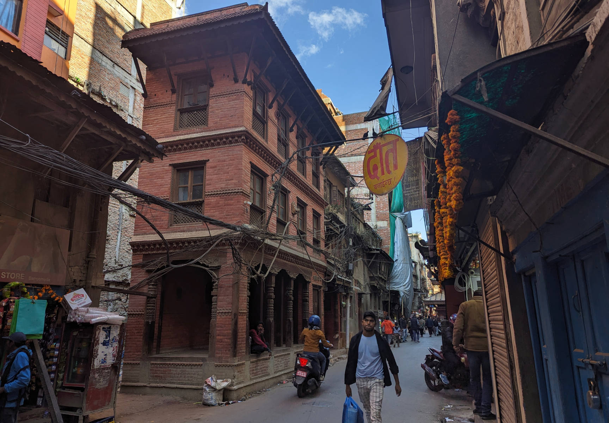
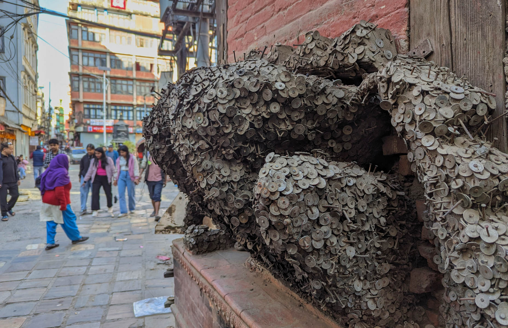
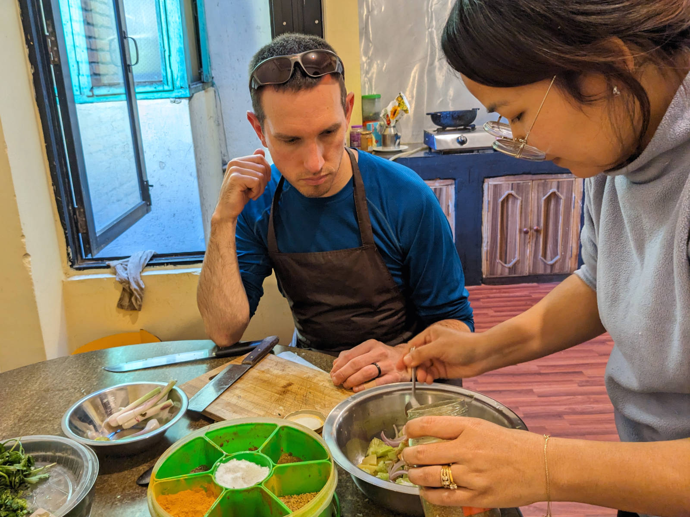
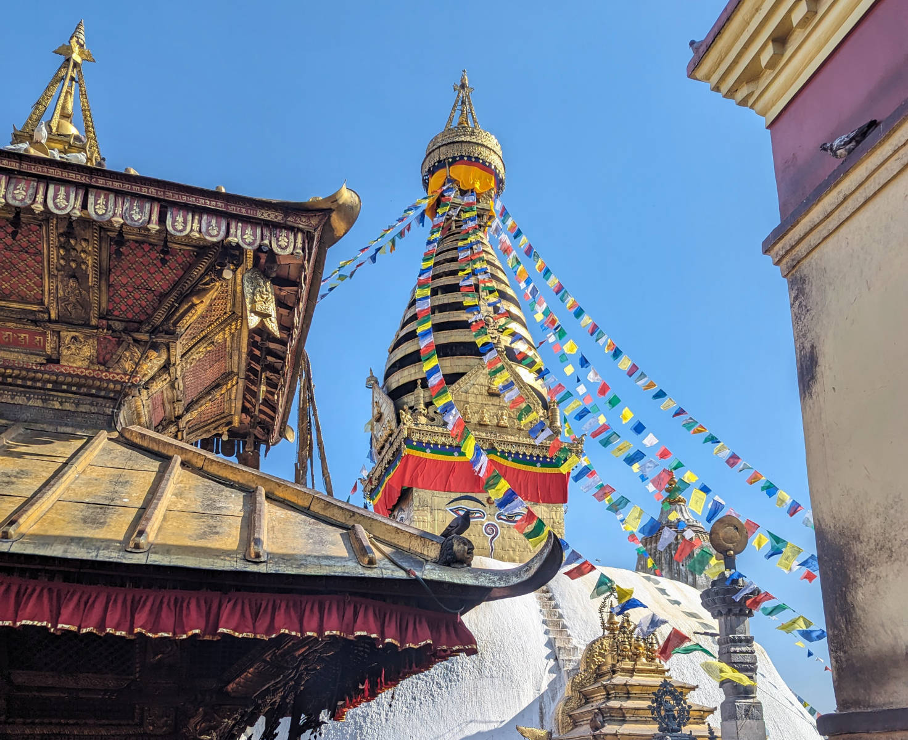
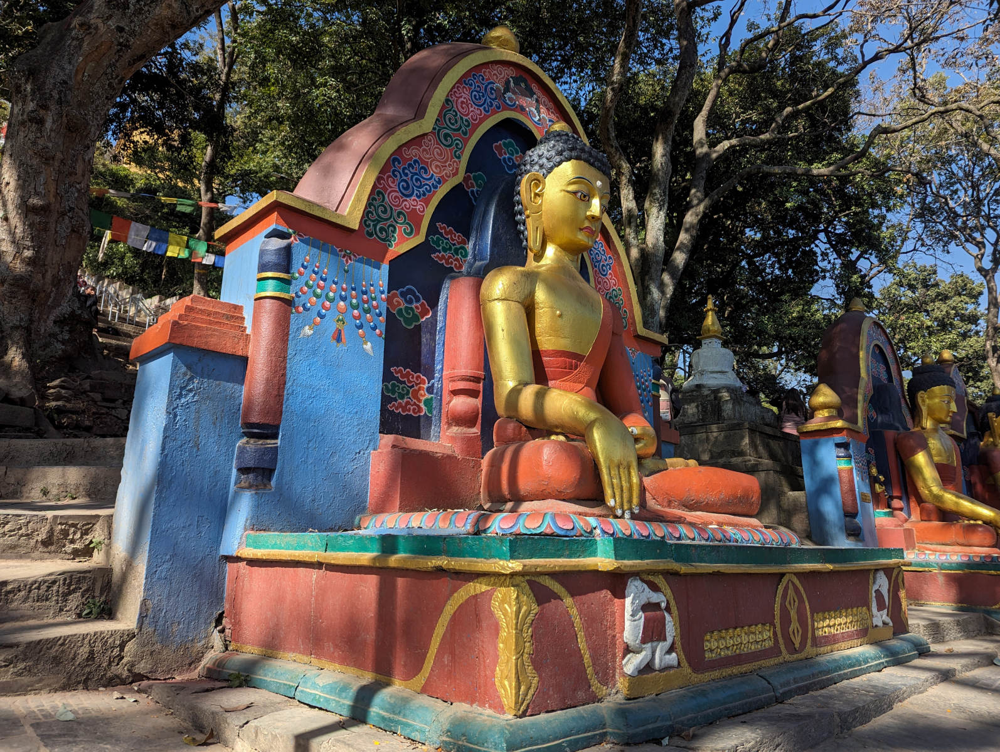
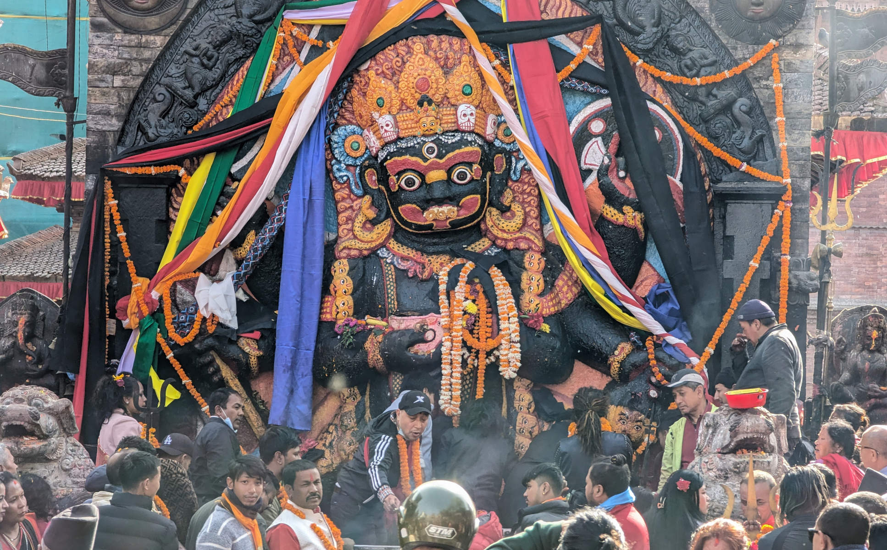

Email Us
Please send us an email, we would love to hear from you!

We are really here! We travelled to Kathmandu, Nepal, twice in this trip, once by flight before our trekking and once by bus after our trekking. The bus ride back was an interesting experience, that seemed intuitively to go on about as long as the flights.
Kathmandu is something else. Perhaps too many people sums it up.

Especially the small streets of the tourist area Thamel, it is one big hectic madness with cars, motorbikes and people.

After dark, it just keeps going. You have to take care that you walk along the sides, so that motorbikes and cars don't run you over

We explore, eat food, and explore some more. So many stores, so much to see. Where to look? Many stores in Thamel sell outdoor clothing. Cheap fake Chinese jackets and pants with names like The North Face and Mammut. But also some real stuff, easily recognizable by quality and price tag. We also found stores where retired guides now sell climbing equipment that was left to them after expeditions. So much climbing gear, some of it so old! I tried to find a piece of equipment that I would like for mixed winter climbing in Scotland, wouldn't it be nice to imagine where it has been. However, I couldn't haggle down to any reasonable price so that it was not much cheaper than an actual new piece of equipment that would come with a piece of rope attached to it and a guarantee that it would not have any faults. We couldn't help to explore and buy a few clothing items that would come in handy back in Scotland. Most of the fun was not in buying and owning them, but finding them and haggling for good prices. And while doing that, exploring the place.
To learn a bit more about Thamel, we download an online walking tour on the phone to listen over earbuds, that gives explanations if we reach certain points. We hadn't tried it before, but found that the technology worked reasonably well. Advantage is that we could stop the tour if we want to stay somewhere a bit longer, or diverge to another street, or have a look in a store, or listen to a part again.

In the end it took us 2 days to finish the 3 hour tour. It led us to many places we might not have come across on our own, and also explained some culture quirks. For example, in the dentist neighbourhood was a big block on which people nail coins to pray to the gods that the dentists would do their work well.

Kathmandu consists of different centres that are all connected in one big city. Thamel is one of those centres, Patan is another. We take a cooking course there to learn how to make the famous momos and Nepalese curries. A great experience with a very friendly woman who explains to us anything we want to know about Nepal, Kathmandu, herself, or food. We thoroughly enjoyed the experience. And it’s impossible to eat it all, so we are sent home with ziplock bags full of momos. They would come in handy on our trekking as lunch which we would start the next day.

Fun fact about Kathmandu, founded in the 2nd century AD, it is one of the oldest continuously inhabited places in the world. Many religions can be found, they often even share religious sites. Hindus, Buddhists, Christians, Muslims. The monkey god Hanuman is the reason that Hindus feed and look after monkeys, for example at Swayambhunath which is a famous center of faith of both Buddhists and Hindus nicknamed the monkey temple. Leigh managed to select a photo without a monkey, but with the famous stupa that is worthwhile explaining a bit further (helped by our big friend wikipedia). The big white dome at the base represents the entire world. When a person awakes (represented by eyes of wisdom and compassion) from the bonds of the world, the person reaches the state of enlightenment. The thirteen pinnacles on the top symbolize that sentient beings have to go through the thirteen stages of spiritual realizations to reach enlightenment or Buddhahood. You get immediately drawn to the large pair of eyes on each of the four sides of the main stupa which represent Wisdom and Compassion, known as the Eyes of Buddha. Above each pair of eyes is another eye, the third eye. It is said that when Buddha preaches, cosmic rays emanate from the third eye which acts as messages to heavenly beings so that those interested can come down to earth to listen to the Buddha. The hellish beings and beings below the human realm cannot come to earth to listen to the Buddha's teaching, however, the cosmic rays relieve their suffering when Buddha preaches. Between the two eyes (also called Wisdom Eyes), a curly symbol, symbolizing the nose, is depicted which looks like a question mark, which is a Nepali sign of number figure one (often confusing us on bank notes). This sign represents the unity of all things existing in the world as well as the only path to enlightenment through the teachings of Buddha. In the picture below, one of the temples that sits around the main stupa can be seen in the foreground.

At the entrance of the temple another Buddha was keeping watch.

Last on our tour of religious sites is Kala Bhairav, a massive Hindu shrine located in Kathmandu Durbar Square, which is a UNESCO World Heritage Site that used to be a royal palace. Bhairav is one of the most dangerous forms of Lord Shiva and among the various forms of Bhairav, this is the most perilous one. The literal meaning of Kala is ‘time’ or ‘death’, hence, Kala Bhairav is also considered as the ‘Lord of time or death’. Considered as the guru of the planetary deity Shani (Saturn), Kala Bhairav is often depicted carrying the decapitated head of Brahma as it is said that the guilt of cutting out one of the five heads of Brahma made him carry the head and roam around as mendicant for several years until he was absolved of the sin. So why would you want this in your palace? Legend has it that the temple served as a supreme court in Nepal. People believed that the person who lied in front of the sculpture would be dead by the powers of the Lord Kala Bhairav. The image of the sculpture is black in colour and is worshipped everyday by the people living in the area and also, those who happen to pass by the image make sure to bow and pay their respects, just in case.

Needless to say, this is only a little bit of a background of two of the religious sites, there are many many many more religious sites in Kathmandu, equally interesting, beautiful, and part of people's everyday lives. It was a privilege to get to see some of these places. We rang some of the bells that are hanging everywhere in religious sites and that everyone just rings. In trying to find out why, I read that some believe that ringing a bell will take away sin and gain strength, that the sound of the bell sounds sweet to the gods and goddesses, that the bell sound empties your brain from thought and thus you are more receptive to the divine, it symbolizes wisdom and compassion, drives away evil spirits and on and on the list goes. To us it sounded nice and in a city so loud and noisy; why not add a little more sound? We thoroughly enjoyed it.
Please send us an email, we would love to hear from you!